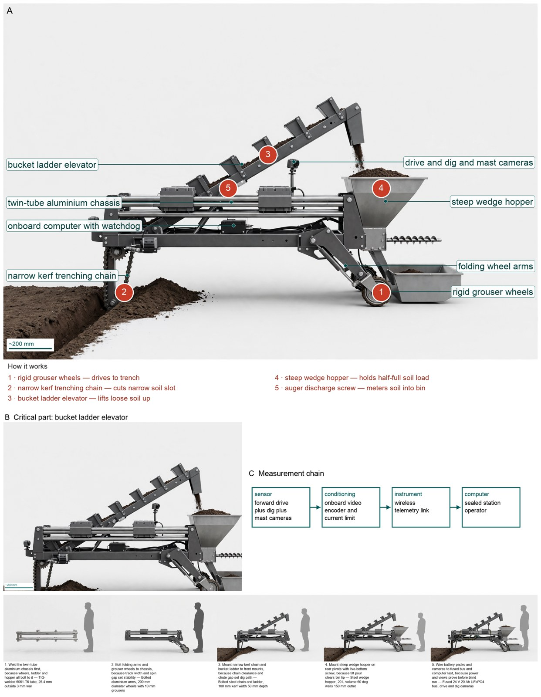
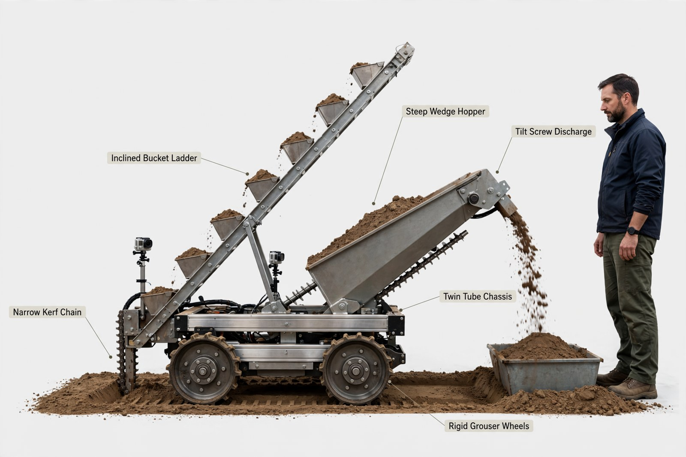
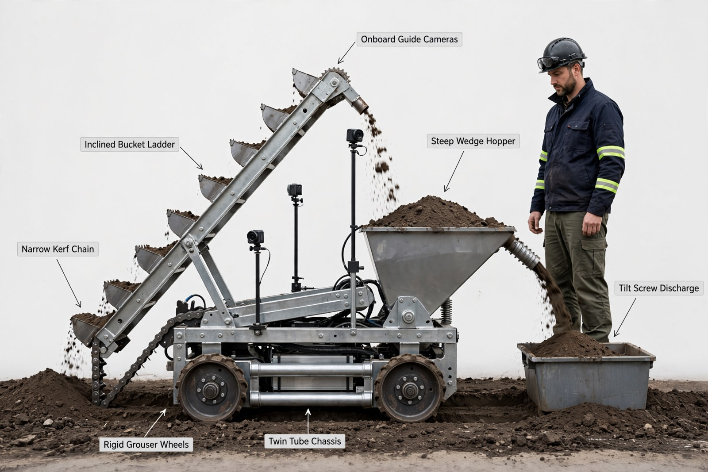
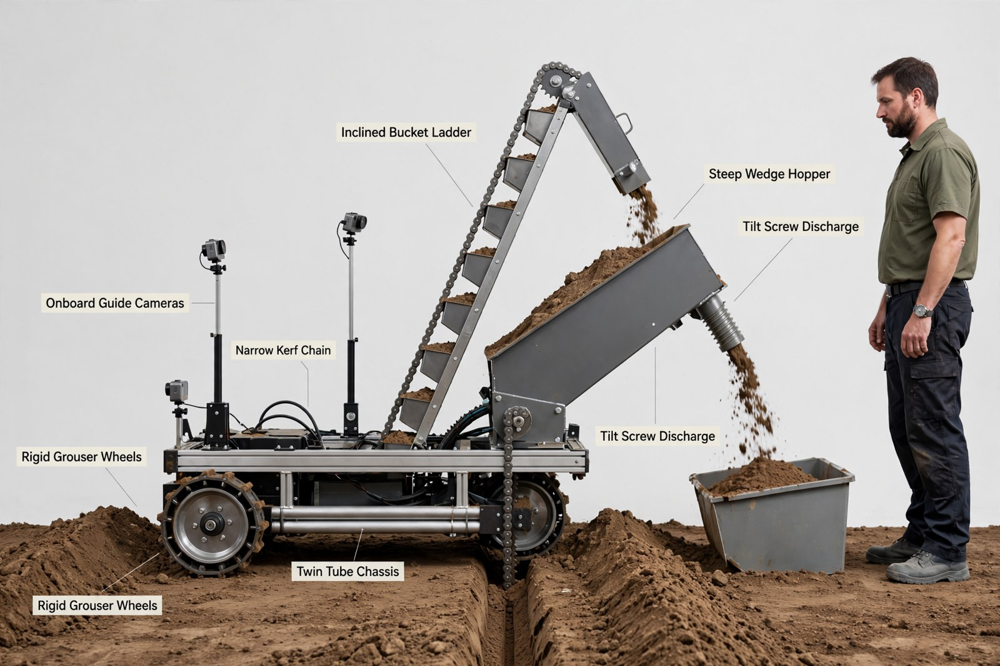
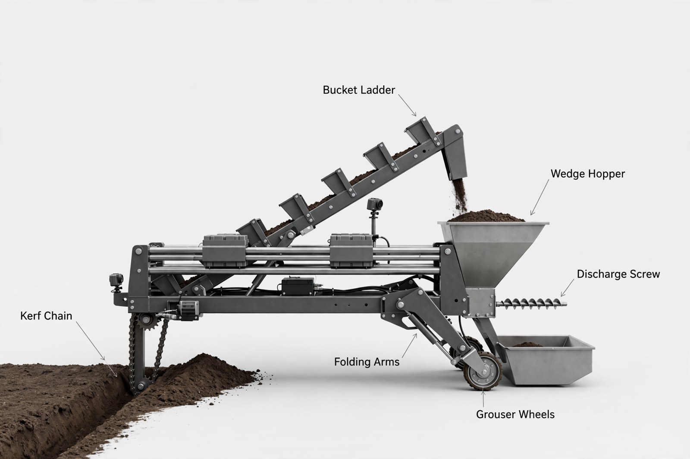

Hardware Engineer — concept report
Lunar regolith excavation robot
Future lunar bases need loose surface soil (regolith) for building and for extracting oxygen. Design a small robot that drives over a bed of lunar soil simulant, digs it up, carries it and dumps it into a collection bin, operated remotely or autonomously by a team that cannot see or hear the robot.
- The whole robot, including its battery, weighs at most 60 kg (the soil it carries is not counted)
- At the start the whole robot fits inside a box 1.0 m long, 0.5 m wide and 0.5 m high; it may unfold after the start
- Digs Black Point 1 (BP-1) lunar basalt regolith simulant
- Controlled remotely or autonomously, with the operators out of sight and hearing of the robot
The concept

Four grouser wheels drive a 46 kg machine that cuts a 100 mm wide slot 50 mm deep, buckets lift the loose soil into a half-full 20 L hopper, and a screw meters the 15 kg load out as the hopper tilts to clear the bin lip by 0.15 m.
Load: narrow kerf chain -> bucket ladder -> steep wedge hopper | Measured: dig camera -> sealed station operator
Three decisive design choices
- Chose four-wheel skid-steer with rigid grouser wheels C9 over tank tracks C8 because traction 294 N versus cut 32.9 N with 15.6 kPa pressure avoids clog and slip with same soil.
- Chose narrow-kerf trenching chain C36 over full-width ladder C1 and scraper C3 and milling drum C31 because 11 N kerf draft versus 32.9 N full width fits same 294 N traction and 16.4 W power.
- Chose auger live-bottom with rear tilt C37 over plain tilting hopper plus vibrator C5 because metered pour with same 0.55 m pivot clearing 0.40 m lip by 0.15 m holds blind accuracy with tip factor 1.69.
Will cohesive BP-1 arch over the 150 mm outlet and what screw torque breaks it for reliable discharge?
What happened
How the picture was made


What the critic flagged:
- ladder: ladder top end free in air high above/left of hopper, buckets full and spilling, white air gap with no chute to hopper; hopper separately full and tilting


Earlier faults now:
- ladder: still wrong
What the critic flagged:
- callout: leader ends on ladder top sprocket gear, no camera there
- ladder: ladder top free in air left/above hopper, open soil pour through air, no chute, white gap
- arm: no folding arms drawn, only fixed uprights above wheels


Earlier faults now:
- ladder: fixed
- callout: fixed
- arm: still wrong
What the critic flagged:
- arm: only short fixed vertical brackets above grouser wheels under chassis, no folding/diagonal arms
- callout: leader ends on black hoses/cables on chassis deck mid-frame, not on trench chain
- callout: leader ends on falling soil stream above hopper, not hopper steel body
- callout: two identical Tilt Screw Discharge labels; lower ends on hopper side panel, upper ends near outlet - duplicate and misplaced
- callout: two identical Rigid Grouser Wheels labels; upper leader ends on left soil pile, not wheel
- battery: unlabeled black boxes/cables on deck, no identifiable 2 packs


What the segmenter saw (SAM 3.1)
Code asked SAM for each part by a plain phrase and measured the boxes against what the design expects; the critic received the differences as evidence.

How the council changed
Revision 1
No member's instructions changed in this revision.
References
111 sources found by the council's searches and the prior-art check (click to open)
- researchgate.net — A Simple Tele-Robotic Lunar Excavator https://www.researchgate.net/publication/262332670_A_Simple_Tele-Robotic_Lunar_Excavator
- robotics.estec.esa.int — Development and Field Testing of Moonraker: a Four-Wheel Rover in Minimal Design (2014) http://robotics.estec.esa.int/i-SAIRAS/isairas2014/Data/Session%202a/ISAIRAS_FinalPaper_0114.pdf
- ig.utexas.edu — Powerpoint template for scientific posters (Swarthmore College) (2024) https://ig.utexas.edu/wp-content/uploads/2024/11/Poster-UHCL-Team-NOVA-1.pdf
- mechanical.sdsu.edu — 2026 NASA Lunabotics Propulsion Navigation and Controls Team – , (2026) http://mechanical.sdsu.edu/design-day/_files/2026/project32-.pdf
- 1library.net — Sinkage - Analysis and Experiments - Axel Rover Tethered Dynamics and Motion Planning on Extrem https://1library.net/article/sinkage-analysis-and-experiments.oz1oxj8q
- academia.edu — Analysis of the Effect of Soft Soil’s Parameters Change on Planetary Vehicles’ Dynamic Response https://www.academia.edu/77857492/Analysis_of_the_Effect_of_Soft_Soil_s_Parameters_Change_on_Planetary_Vehicles_Dynamic_Response
- venturi.space — Tests MONA LUNA at Luna - Venturi Space https://venturi.space/en/article/european-lunar-rover-mona-luna-completes-its-first-driving-tests/
- thomasnet.com — University of Virginia Students Win NASA Challenge With Excavation Rover https://www.thomasnet.com/insights/university-of-virginia-bruno-excavation-rover-nasa-challenge/
- mavigadget.com — From Mars to the Moon: The Robots Leading the Way in Space E https://mavigadget.com/blogs/tech-gadgets/from-mars-to-the-moon-the-robots-leading-the-way-in-space-exploration
- en.wikipedia.org — NASA robots - Wikipedia https://en.wikipedia.org/wiki/List_of_NASA_robots
- pcbway.com — Perseus: Building a Lunar Rover with QUT ROAR https://www.pcbway.com/project/sponsor/Perseus_Building_a_Lunar_Rover_with_QUT_ROAR_44d23606.html
- bwieagle.com — BWI Eagle - E-Stop https://www.bwieagle.com/E-Stop.html
- 1library.net — Absolute and relative localization https://1library.net/article/absolute-relative-localization-description-navigation-processes-cobot-proje.q0j09nvz
- nelsonamoore.gitlab.io — 9781289096038 2011 nasa lunabotics mining competition for univ.pdf (2011) https://nelsonamoore.gitlab.io/ir/13-geovany-hauck-ii-1/9781289096038-2011-nasa-lunabotics-mining-competition-for-univ.pdf
- hou.usra.edu — Developing a New Space Economy (2019) 5068.pdf Lightning Talk or Poster (2019) https://www.hou.usra.edu/meetings/lunarisru2019/pdf/5068.pdf
- manualslib.com — Failsafe; Pilot Guideline - Flyability ELIOS User Manual https://www.manualslib.com/manual/1556425/Flyability-Elios.html?page=33
- sugaku.net — A Comparison of Three Measurement Models for the Wheel-Mounted MEMS IMU-Based Dead Reckoning System https://sugaku.net/oa/W3192877624/
- it.ecer.com — batteria del fosfato del ferro del litio di 24V 10AH per il robot elettrico nella dimensione leggera e compatta from China Factory https://it.ecer.com/corp/details-uuu3tg0-puaf77v-24v-10ah-lithium-iron-phosphate-battery-for-electric-robot-in-light-weight-and-compact-size.html
- it.ecer.com — pacchetto della batteria di 24V 10AH LiFePO4 per il robot elettrico nella dimensione leggera e compatta from China Factory https://it.ecer.com/corp/details-uuu3tg0-pu1bk6y-24v-10ah-lifepo4-battery-pack-for-electric-robot-in-light-weight-and-compact-size.html
- practicalmachinist.com — Engineering help please https://www.practicalmachinist.com/forum/threads/engineering-help-please.425223/
- garagejournal.com — Aluminum square tubing strength https://www.garagejournal.com/forum/threads/aluminum-square-tubing-strength.479789/
- sebastionjenson.com — Sebastion | Engineering https://www.sebastionjenson.com/
- vdocuments.site — Robotics Minindg Competition Rules 2014 1 - [PDF Document] (2014) https://vdocuments.site/robotics-minindg-competition-rules-2014-1.html
- sebastion.me — Sebastion | Engineering https://www.sebastion.me/
- rockzoneamericas.com — Single Drum Trench Cutters | Transverse Cutter | Trenching Attachment https://rockzoneamericas.com/products/categories/rockwheels/single-drum-trench-cutters
- 22027224.fs1.hubspotusercontent-na1.net — Transverse Drum (2025) https://22027224.fs1.hubspotusercontent-na1.net/hubfs/22027224/Proposals/Standard_Range/Attachments/Transverse_Drum_Cutter%20_Series_Proposal_2025.pdf
- extension.psu.edu — Skid-Steer Safety for Farm and Landscape https://extension.psu.edu/skid-steer-safety-for-farm-and-landscape
- ribblevalleytrainingcentre.com — 'Untitled' (2022) https://ribblevalleytrainingcentre.com/wp-content/uploads/2022/07/SKID-STEER-STUDY-NOTES.pdf
- sambuz.com — [PPT] - Phase 1 of Articulated Arm 6-Axis Robot PowerPoint Presentation - 21678 https://www.sambuz.com/doc/phase-1-of-articulated-arm-6-axis-robot-ppt-presentation-21678
- vdocuments.site — INFRASTRUCTURE ROBOTICS: A TECHNOLOGY ENABLER …spacetrex.arizona.edu/iac_2008.pdfINFRASTRUCTURE ROBOTICS: A TECHNOLOGY ENABLER FOR LUNAR IN-SITU RESOURCE UTILIZATION, HABITAT CONSTRUCTION - [PDF Document] (2008) https://vdocuments.site/infrastructure-robotics-a-technology-enabler-infrastructure-robotics-a-technology.html
- jlab.org — Microsoft Word - FTOF Panel 1B Frame Analysis.docx https://www.jlab.org/Hall-B/ftof/fea/ftof-p1bframe-fea.pdf
- informatik.uni-wuerzburg.de — Advanced Edge Detection of AprilTags for Precise Docking Maneuvers of Mobile Robots (2022) https://www.informatik.uni-wuerzburg.de/en/robotics/publications/?tx_extbibsonomycsl_publicationlist%5Baction%5D=download&tx_extbibsonomycsl_publicationlist%5Bcontroller%5D=Document&tx_extbibsonomycsl_publicationlist%5BfileName%5D=ta2022_1.pdf&tx_extbibsonomycsl_publicationlist%5BintraHash%5D=7f39bb4bfa053cc89d3989be7004f178&tx_extbibsonomycsl_publicationlist%5BuserName%5D=nuechter76&cHash=5ca4b90211cc5500565de480df984356
- cuhkqa.mirrorweb.com — Indoor Hydroponics Robot System for Automated Seeding and Logistics https://cuhkqa.mirrorweb.com/qa/20260127002602mp_/http:/www.cse.cuhk.edu.hk/%7Ejlee/publ/24/icca24VMOrobots.pdf
- patents.google.com — CA2784416C - Systems, devices, and/or methods regarding excavating
- - Google Patents https://patents.google.com/patent/CA2784416C/en
- patents.Justia.Com — Systems, devices, and/or methods regarding excavating https://patents.Justia.Com/patent/7832126
- ia801203.us.archive.org — Preparation of Papers for AIAA Technical Conferences http://ia801203.us.archive.org/18/items/NASA_NTRS_Archive_20120002750/NASA_NTRS_Archive_20120002750.pdf
- jenike.com — Case Study - Limestone and Clay Storage Solution | Jenike & Johanson https://jenike.com/case-studies/reliable-handling-of-limestone-and-clay-at-cemex/
- powderbulksolids.com — Powder Perspectives: There is a Science to Powder Handling https://www.powderbulksolids.com/material-handling-transportation/powder-perspectives-there-is-a-science-to-powder-handling
- mine.geo.mtu.edu — MINE https://mine.geo.mtu.edu/Lunabotics.html
- dspace.bracu.ac.bd:8080 — Chondrobot-2: A simple and efficient semi-autonomous tele-robotic lunar excavator http://dspace.bracu.ac.bd:8080/xmlui/handle/10361/7429
- forums.ni.com — Mile-High Miners Nasa Lunabotics Project (Colorado School of Mines) https://forums.ni.com/t5/Student-Projects/Mile-High-Miners-Nasa-Lunabotics-Project-Colorado-School-of/ta-p/3528955
- alabamaastrobotics.com — NASA LUNABOTICS 2025 https://www.alabamaastrobotics.com/nasa-lunabotics-2025.html
- attachments.are.na — IAC-19-,D3,2A,2,x51412 https://attachments.are.na/44605482/3ed9028d0848397f5e6b39eca3d06c50.pdf?1774077464
- library.bracu.ac.bd — Staff View: Chondrobot-2: A simple and efficient semi-autonomous tele-robotic lunar excavator :: Discovery Services https://library.bracu.ac.bd/vufind/Record/10361-7429/Details
- dspace.bracu.ac.bd:8080 — Dr. Md. Belal Hossain Bhuian http://dspace.bracu.ac.bd:8080/xmlui/feed/rss_2.0/10361/6991
- docslib.org — A Review of Extra-Terrestrial Mining Robot Concepts https://docslib.org/doc/13426284/a-review-of-extra-terrestrial-mining-robot-concepts
- dspace.bracu.ac.bd:8080 — Dr. Md. Belal Hossain Bhuian http://dspace.bracu.ac.bd:8080/xmlui/feed/rss_1.0/10361/6991
- archive.org — Full text of "NASA Technical Reports Server (NTRS) 20110016233: A Review of Lunar Regolith Excavation Robotic Device Prototypes" https://archive.org/stream/NASA_NTRS_Archive_20110016233/NASA_NTRS_Archive_20110016233_djvu.txt
- mechanical.sdsu.edu — ARES Design Day Poster https://mechanical.sdsu.edu/design-day/_files/2024/ares.pdf
- pdfslide.net — A Review of Extra-Terrestrial Regolith Excavation Concepts https://pdfslide.net/documents/a-review-of-extra-terrestrial-regolith-excavation-concepts-.html
- slideserve.com — Lunar Excavation Vehicle Design for NASA Lunabotics Mining Competition https://www.slideserve.com/reuben-monroe/nasa-lunabotics-mining-competition-interim-design-presentation
- docslib.org — A Review of Extra-Terrestrial Regolith Excavation Concepts and Prototypes Lunar ISRU 2019 July 17, 2019 Columbia, Maryland - DocsLib https://docslib.org/doc/9899597/a-review-of-extra-terrestrial-regolith-excavation-concepts-and-prototypes-lunar-isru-2019-july-17-2019-columbia-maryland
- missions.info-quest.org — PowerPoint Presentation http://missions.info-quest.org/Documents/PDF/5066_Mueller.pdf
- researchgate.net — Productive Lightweight Robotic Excavation for the Moon and Mars https://www.researchgate.net/publication/278117394_Productive_Lightweight_Robotic_Excavation_for_the_Moon_and_Mars
- lunarnetworks.blogspot.com — Lunar Pioneer: CHONDROBOT-2 - A simple, efficient semit-autonomous tele-robotic lunar excavator https://lunarnetworks.blogspot.com/2013/01/chonodrobot-2-simple-efficient-semit.html
- ascelibrary.org — Testing of a Bucket Ladder Excavation Mechanism for Lunar Applications https://ascelibrary.org/doi/abs/10.1061/9780784484470.023
- patents.google.com — DE10157345C1 - Conveyor chain drive for bucket chain excavator uses drive polygons provided with extended bearing surfaces on either side https://patents.google.com/patent/DE10157345C1/en
- osti.gov — Bucket chain excavator https://www.osti.gov/biblio/6429955
- patents.google.com — DE528341C - https://patents.google.com/patent/DE528341C/en
- patents.google.com — DE497298C - https://patents.google.com/patent/DE497298C/en
- patents.google.com — DE501439C - https://patents.google.com/patent/DE501439C/en
- patents.justia.com — US Patent for Method and device for recovering fine sand from a floating dredger Patent (Patent # 6,533,944 issued March 18, 2003) - Justia Patents Search https://patents.justia.com/patent/6533944
- c.91souke.com — DE590778C - https://c.91souke.com/extdomains/patents.google.com/patent/DE590778C/en
- patents.google.com — DE9111981U1 - https://patents.google.com/patent/DE9111981U1/en
- ntrs.nasa.gov — US000009027265B120150512 https://ntrs.nasa.gov/api/citations/20150009348/downloads/20150009348.pdf
- patents.google.com — US6533944B1 - Method and device for recovering fine sand from a floating dredger https://patents.google.com/patent/US6533944B1/en
- patents.google.com — DE694594C - https://patents.google.com/patent/DE694594C/en
- dspace.bracu.ac.bd:8080 — Dr. Md. Belal Hossain Bhuian http://dspace.bracu.ac.bd:8080/xmlui/feed/atom_1.0/10361/6991
- dspace.bracu.ac.bd:8080 — Conference Paper http://dspace.bracu.ac.bd:8080/xmlui/feed/atom_1.0/10361/6992
- infona.pl — Md. Mosaddequr Rahman https://www.infona.pl/contributor/1@bwmeta1.element.wiley-jai-v-28-i-2-jai1900/tab/publications
- infona.pl — Belal Hossain https://www.infona.pl/contributor/1@bwmeta1.element.springer-doi-10_1186-S12884-018-2046-0/tab/publications?searchConf=authorResource&resultPage=2&q=sc*op*l_0*p_0iPP.20*p_0cP.1&resultItemPerPage=20&searchPhrase=
- engprojects.tcnj.edu — Competition – NASA Lunabotics https://engprojects.tcnj.edu/lunabotics26/tcnj-lunabotics-team/competition/
- github.com — PantherLunabotics2025-2026/CLAUDE.md at 560db41c814db934193b98d364d5717375efb8ce · mianqun/PantherLunabotics2025-2026 https://github.com/mianqun/pantherlunabotics2025-2026/blob/HEAD/CLAUDE.md
- pdfslide.tips — (Download PDF) lunabotics rles https://pdfslide.tips/download/link/lunabotics-rles.html
- science.gov — nasa lunar mining: Topics by Science.gov https://www.science.gov/topicpages/n/nasa+lunar+mining
- digital.wpi.edu — Computer Science, Mechanical Engineering, And Robotics Engineering Programs https://digital.wpi.edu/downloads/4j03d2179?locale=en
- peer.asee.org — Senior Design Experience Using NASAs Lunabotics Mining Competition: Best Practices and Evaluation of Student Learning https://peer.asee.org/senior-design-experience-using-nasa-s-lunabotics-mining-competition-best-practices-and-evaluation-of-student-learning.pdf
- alabamaastrobotics.com — FAQ - Alabama Astrobotics https://www.alabamaastrobotics.com/faq.html
- yumpu.com — Project of Autonomous Con https://www.yumpu.com/xx/document/view/67075271/mechatronics-2013-recent-technological-and-scientific-advances-pdfdrive-/545
- science.gov — remote excavation system: Topics by Science.gov https://www.science.gov/topicpages/r/remote+excavation+system
- patents.justia.com — Lunar Regolith Processing System for Mining and Beneficiation https://patents.justia.com/patent/20240200447
- patents.justia.com — U.S. Patent Application for MIXER BUCKET Patent Application (Application #20180345536 issued December 6, 2018) - Justia Patents Search https://patents.justia.com/patent/20180345536
- patents.justia.com — Autonomous excavating apparatus https://patents.justia.com/patent/8061441
- patents.Google.Com — CN209438556U - A kind of powder grain material matches material conveying device https://patents.Google.Com/patent/CN209438556U/en
- patents.google.com — US1466568A - Excavator https://patents.google.com/patent/US1466568A/en
- patents.google.com — CN214526319U - Double-screw conveyer https://patents.google.com/patent/CN214526319U/en
- eureka.patsnap.com — Sludge discharger - Eureka | Patsnap https://eureka.patsnap.com/patent-CN106988356A
- patents.google.com — CN114293987A - Wheel bucket excavator suitable for excavating harder materials https://patents.google.com/patent/CN114293987A/en
- patents.google.com — JP2911881B1 - https://patents.google.com/patent/JP2911881B1/en
- amanrajdce.github.io — TEAM DELTECH LUNAR EXCAVATORS https://amanrajdce.github.io/data2/lunabot_sys_eng_paper.pdf
- library.bracu.ac.bd — Staff View: A simple tele-robotic lunar excavator :: Discovery Services https://library.bracu.ac.bd/vufind/Record/10361-7415/Details
- library.bracu.ac.bd — Staff View: A new routing algorithm for symmetric rearrangeable networks and emerging applications :: Discovery Services https://library.bracu.ac.bd/vufind/Record/10361-7310/Details
- dspace.bracu.ac.bd:8080 — Conference Paper http://dspace.bracu.ac.bd:8080/xmlui/feed/rss_2.0/10361/6992
- web1.eng.famu.fsu.edu — Slide 1 https://web1.eng.famu.fsu.edu/me/senior_design/2011/team19/presentations/final_design.pdf
- web1.eng.famu.fsu.edu — Slide 1 https://web1.eng.famu.fsu.edu/me/senior_design/2011/team19/presentations/springMidtermPresentation.pdf
- dspace.bracu.ac.bd:8080 — Conference Paper http://dspace.bracu.ac.bd:8080/xmlui/feed/rss_1.0/10361/6992
- core.ac.uk — https://ntrs.nasa.gov/search.jsp?R=20130008972 2019-08-30T23:58:10+00:00Z https://core.ac.uk/download/pdf/10573073.pdf
- core.ac.uk — https://ntrs.nasa.gov/search.jsp?R=20120013419 2019-08-30T21:53:53+00:00Z https://core.ac.uk/download/pdf/10569729.pdf
- vdocuments.net — Regolith Advanced Surface Systems Operations Robot … · Regolith Advanced Surface Systems Operations Robot (RASSOR) ... The Regolith Advanced Surface Systems Operations ... space - [PDF Document] https://vdocuments.net/regolith-advanced-surface-systems-operations-robot-advanced-surface-systems.html
- sciences.ucf.edu — ConstructionwithRegolith https://sciences.ucf.edu/class/wp-content/uploads/sites/23/2017/03/CLASS-SSERVI-Robotic-Construction-Mueller-v1-March-2017.compressed.pdf
- researchgate.net — Regolith Advanced Surface Systems Operations Robot (RASSOR) https://www.researchgate.net/profile/Rachel-Cox-7/publication/261248231_Regolith_Advanced_Surface_Systems_Operations_Robot_RASSOR/links/5c0fdb224585157ac1bb3893/Regolith-Advanced-Surface-Systems-Operations-Robot-RASSOR.pdf?origin=scientificContributions
- zenodo.org — Regolith Advanced Surface Systems Operations Robot (RASSOR) https://zenodo.org/records/1263919/files/article.pdf?download=1
- ntrs.nasa.gov — PowerPoint Presentation https://ntrs.nasa.gov/api/citations/20170002067/downloads/20170002067.pdf?attachment=true
- designfax.net — Designfax – Technology for OEM Design Engineers https://www.designfax.net/cms/dfx/opens/articleview.php?nid=4&bid=273&aid=2159&eid=
- nanowerk.com — NASA working on mining robot for space missions https://www.nanowerk.com/news2/robotics/newsid=28702.php
- lsic.jhuapl.edu — LSIC Power Beaming workshop https://lsic.jhuapl.edu/uploadedDocs/presentations/932-Focus%20Area%20Presentations.pdf
- cs.roboticbuilding.eu — PowerPoint Presentation http://cs.roboticbuilding.eu/images/6/69/3.paper.pdf
- homelandsecuritynewswire.com — Robotics | Homeland Security Newswire https://www.homelandsecuritynewswire.com/dr20130204-nasa-engineers-building-sturdy-bluecollar-mining-robot?page=0,0
- booksci.cn — 2012 15th International Conference on Computer and Information Technology (ICCIT)最新文献_第6页 - Book学术 https://www.booksci.cn/literature_d127060_6.htm
- dspace.bracu.ac.bd:8080 — Conference Paper http://dspace.bracu.ac.bd:8080/xmlui/feed/atom_1.0/10361/7016
Files
- Whiteboard replay
- Reference list (Markdown)
- iter_00 transcript · whiteboard
- iter_01 transcript · whiteboard
Run 20261104-121008_lunar-regolith-excavation-robot · total cost $4.25 · conceptual illustration — physical performance not established.